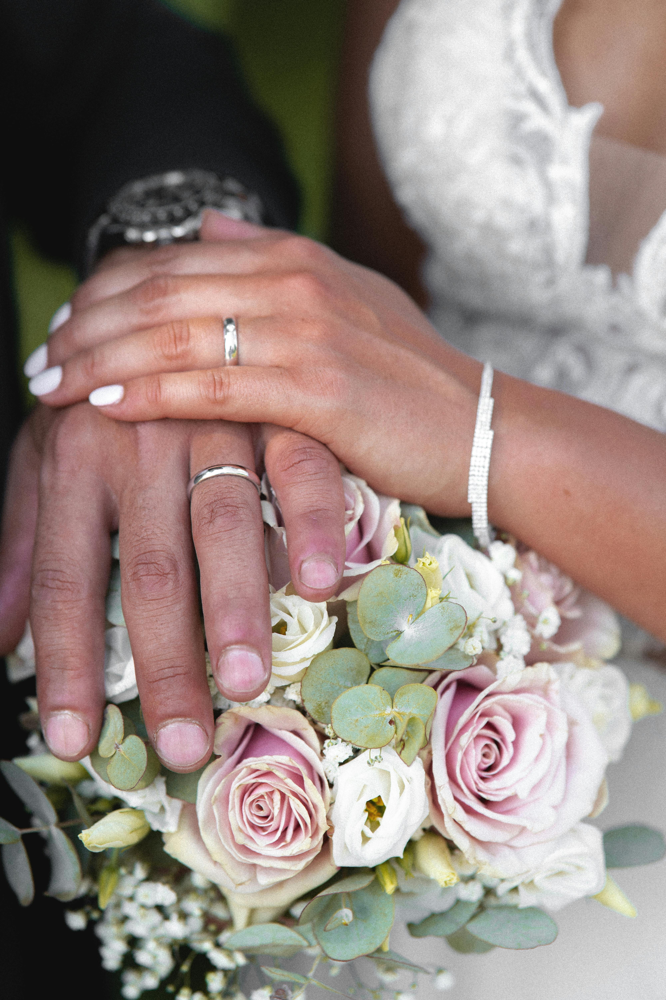

Sobre à Vecchio Joalheiros
desde 1970 na cidade de São Paulo, a nossa tradição judaica de negociar uniu-se ao profundo
conhecimento e gosto pela alta joalheria , possibilitando aos nossos clientes no mesmo endereço, realizar a
compra, venda, troca de suas peças.
Seja qual for o seu desejo em relação a joias e relógios nós podemos ajudá-lo.
As nossas peças são adquiridas de coleções particulares, totalmente tratadas por nossos ourives e relojoeiros.
São peças únicas, com garantia de composição (ouro ou platina e pedras preciosas) e montagem.